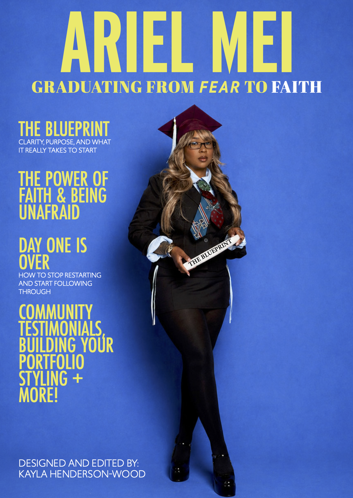
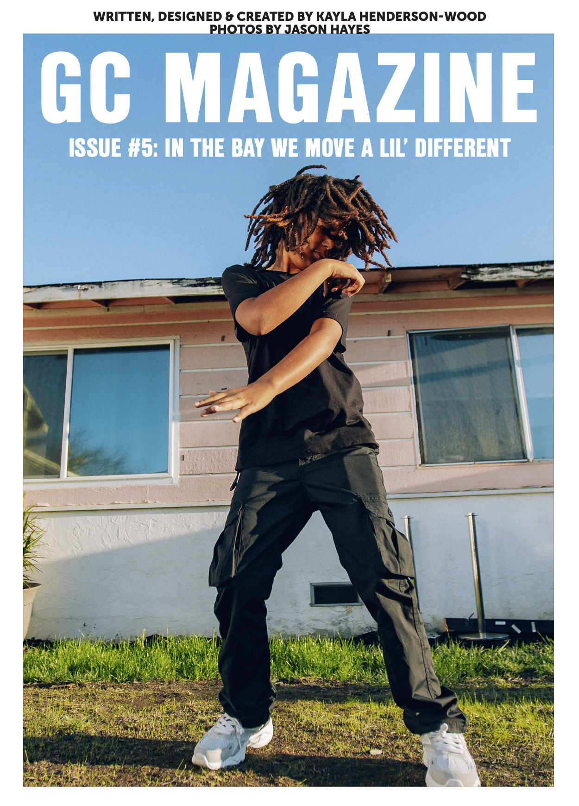
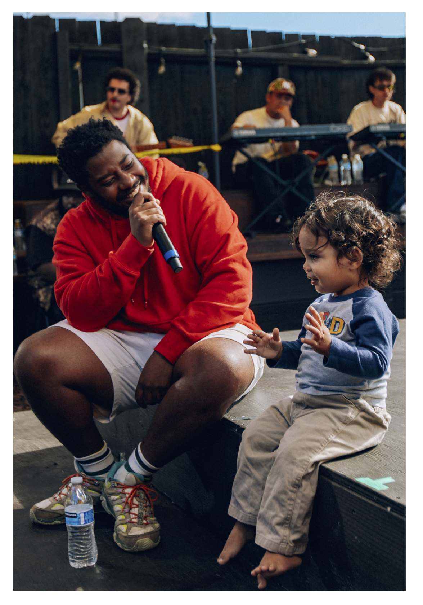
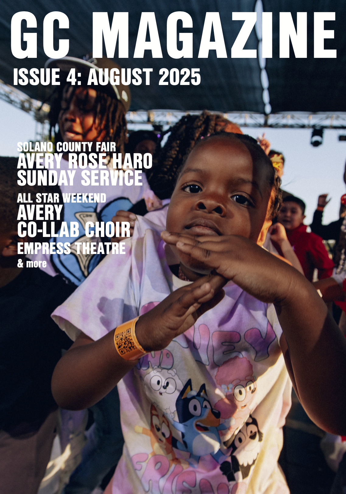
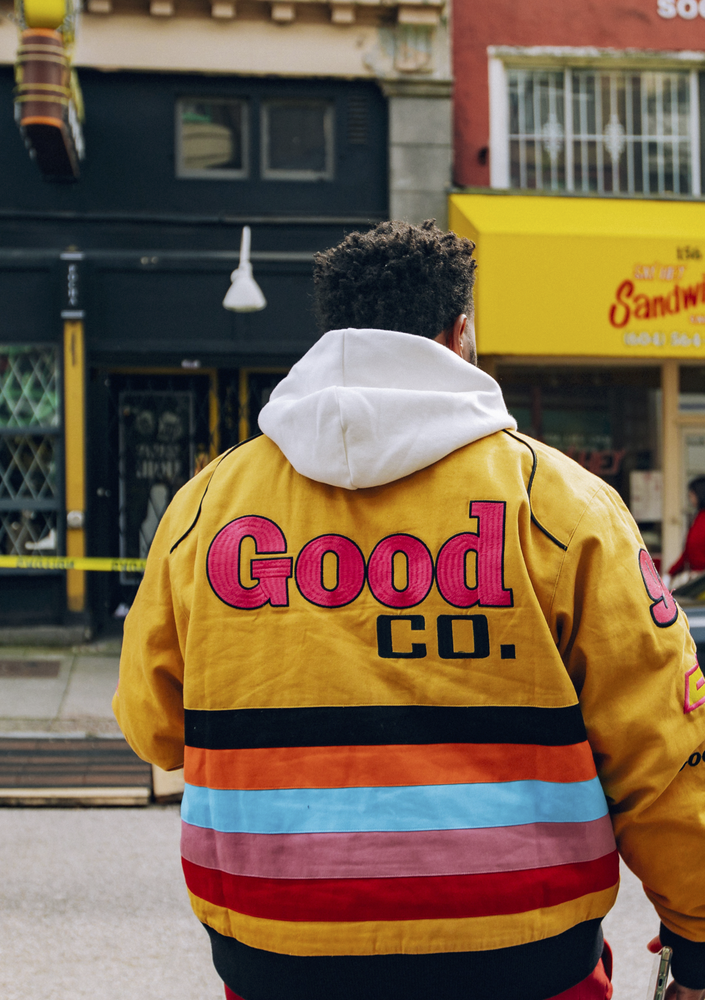
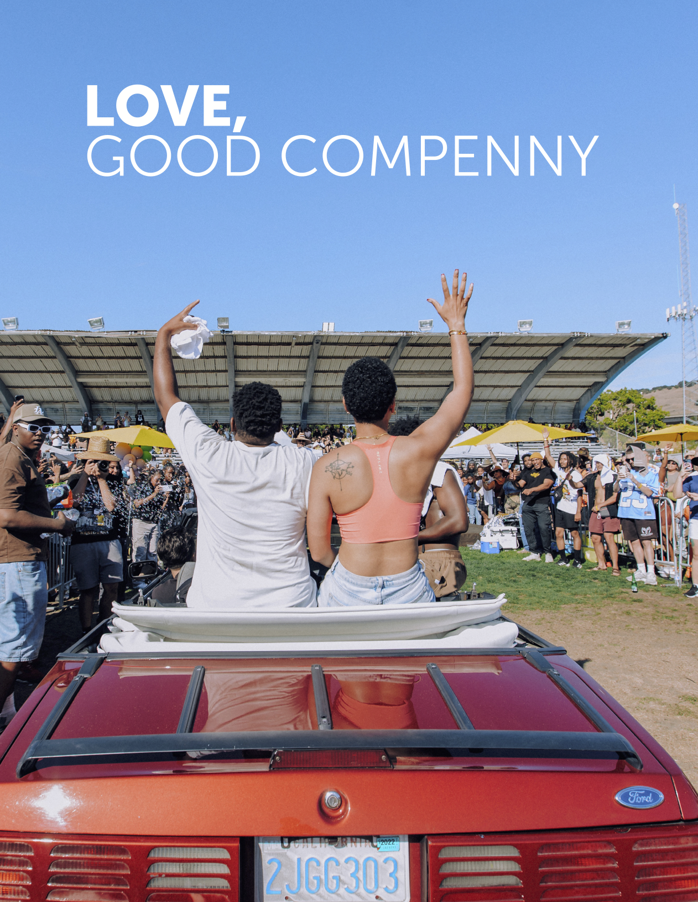
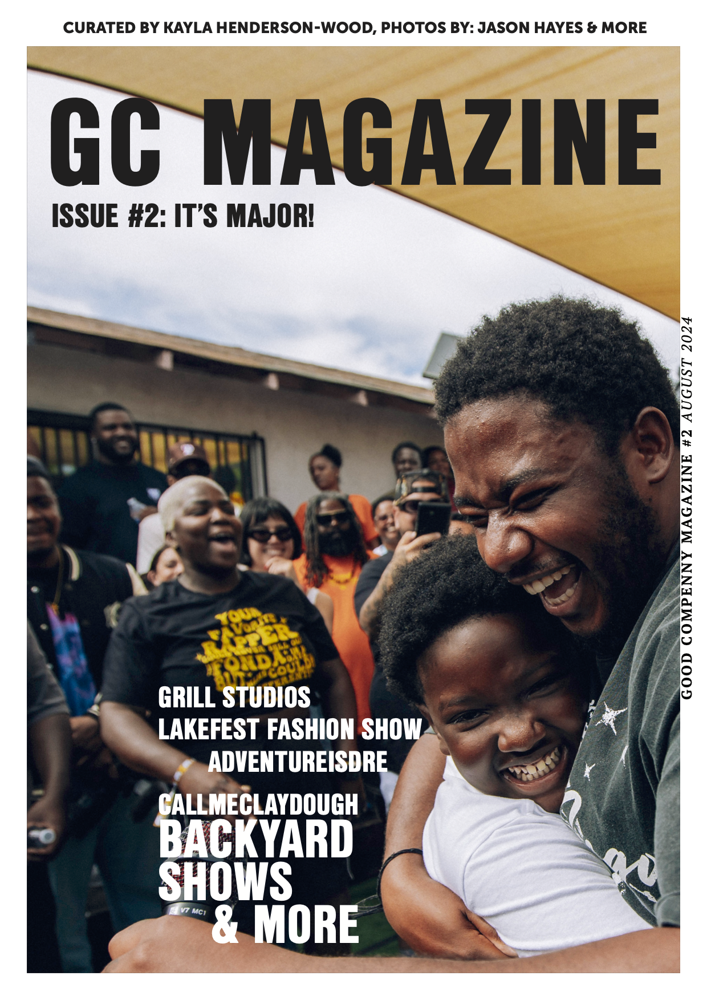
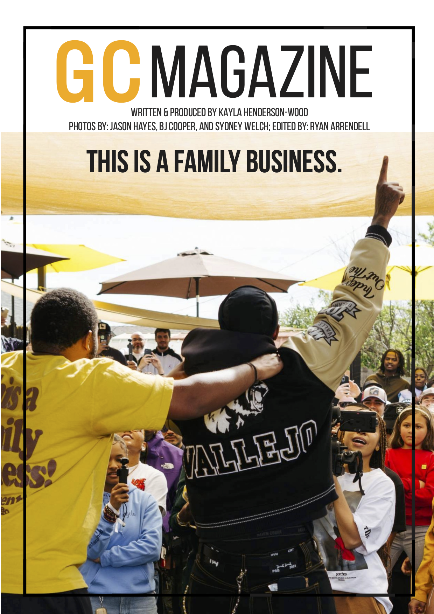
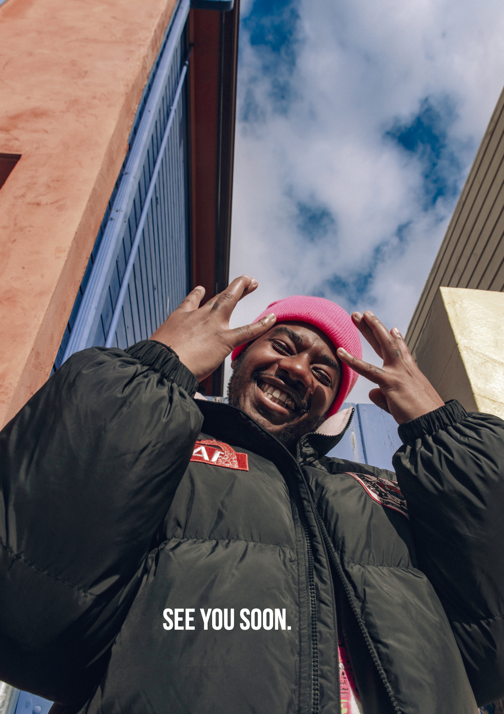

DOCUMENTING STORIES ABOUT
THROUGH SHORT-FORM VIDEOS, DIGITAL JOURNALISM, SOCIAL MEDIA AND PRINT PUBLICATIONS.
SCROLL TO EXPLORE

SHORT-FORM VIDEOS
HOVER TO PLAY
JOURNALISM
Every story I tell is an opportunity to educate audiences, elevate community voices and inspire people to believe in themselves and the world around them.
PRINT PUBLICATIONS











ABOUT ME
Kayla Henderson-Wood
As you may be able to tell, I am drawn to the countless ways stories can be told. I've worked as a journalist, communicator, print magazine creator, social media strategist, public relations specialist and more. While my roles have changed, my purpose has remained the same: to tell stories that celebrate communities, bridge perspectives and inspire others.
LINKEDINCONTACT ME
I’m always open to new stories, collaborations and opportunities.
Let’s connect.
- kayla-henderson-wood
SOCIAL MEDIA
HOVER TO EXPLORE